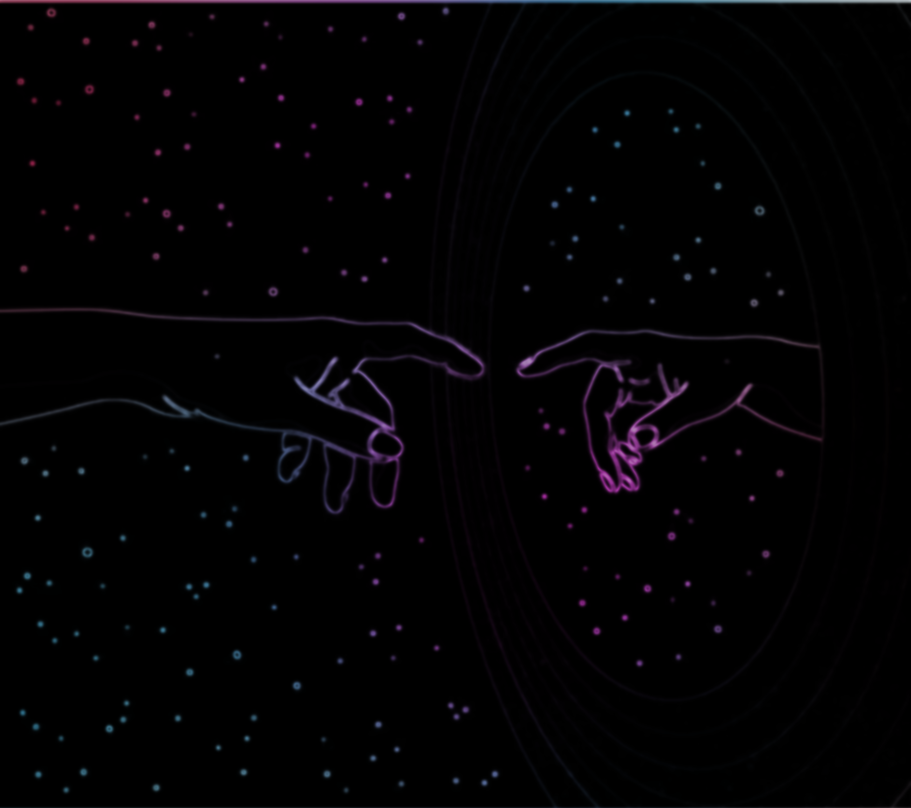
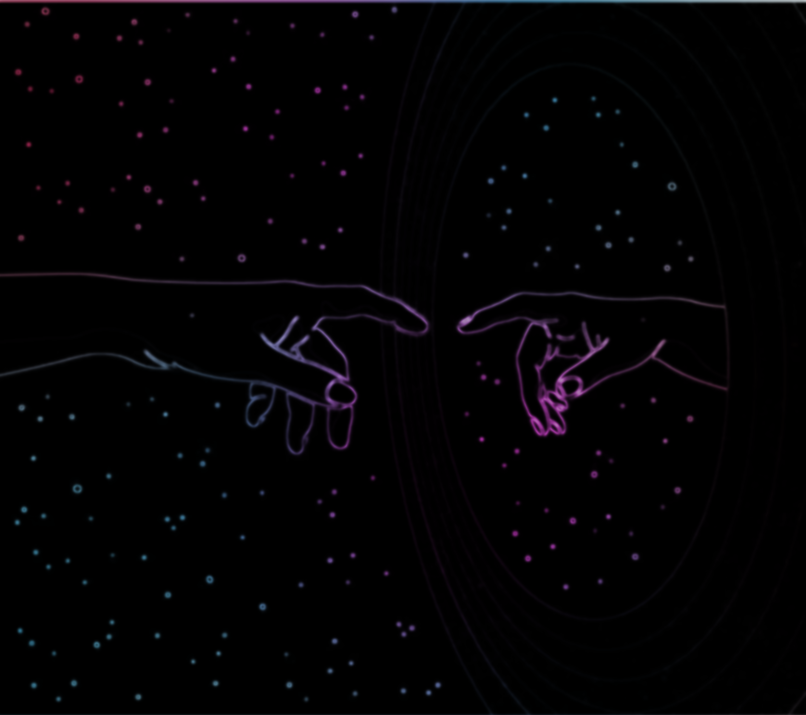

Live Scape revolutionizes the way we experience movies by transforming scenes to reflect the viewer’s unique environment. Imagine watching a film where the setting aligns with the world around you—an immersive connection unfolds as the movie responds in real-time. Live Scape adjusts details to resonate with your atmosphere, crafting an experience that feels close, personal, and ever-changing. Whether it's a shift in light, ambiance, or the subtle cues of your surroundings, Live Scape brings a new level of cinematic immersion that merges fiction and reality, making each viewing truly unforgettable.

 
